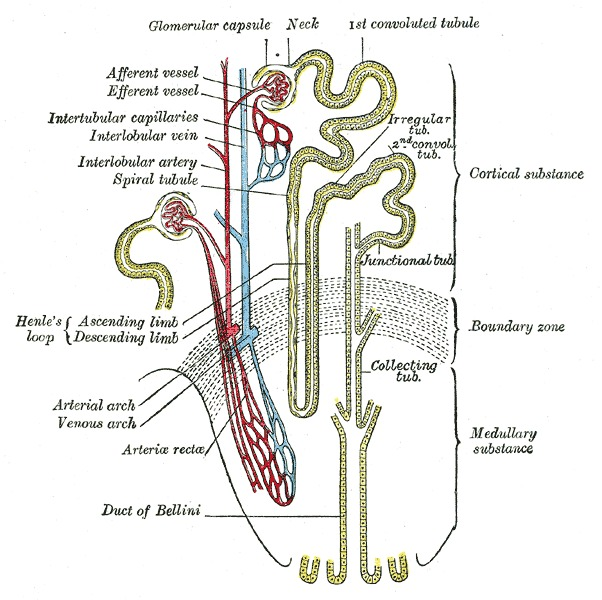

The GLP-1 Benefit List Keeps Growing. Here's What's Actually Been Shown.
OCTOBER 2, 2026

Cardiologist Eric Topol posted recently that "the list of GLP-1 drug benefits independent of weight loss keeps growing," pointing to new data on semaglutide and the kidney. He's not wrong, and the kidney finding he's citing is a good place to start, because it's the clearest recent example of a pattern showing up across half a dozen organs now: drugs built to treat diabetes and obesity are doing things a pure weight-loss story doesn't explain.
The Kidney Finding That Prompted This
REMODEL, a 106-person trial presented at the 2026 World Congress of Nephrology, put people with type 2 diabetes and chronic kidney disease on weekly semaglutide or placebo for 52 weeks and — in a 33-person subgroup — took paired kidney biopsies before and after. The clinical numbers alone were strong: a 40% reduction in albuminuria (protein leaking into urine, the standard marker of kidney damage) and stabilized kidney function. But the biopsies are the actual mechanistic finding Topol is pointing at. They showed a marked reduction in peri-glomerular immune cells — natural killer T cells clustered around the kidney's filtering units — alongside broad downregulation of fibroinflammatory gene-expression pathways: less inflammation, less of the signal that drives scarring (fibrosis), directly inside kidney tissue. Functional MRI in the same trial found kidney fat reductions larger than the overall weight loss would predict, plus lower renal arterial resistance — a sign of healthier blood vessels feeding the kidney, not just a lighter patient.
That last point is the one that matters for "independent of weight loss": the trial's own analysis argues the kidney protection can't be fully explained by the usual suspects — better blood sugar, lower blood pressure, weight lost — because the tissue-level changes outpaced what those alone would produce. REMODEL hasn't been published in a peer-reviewed journal as of this writing; what's public is the conference presentation and the biopsy sub-analysis, which is a real limitation discussed further down.
What a Full Outcomes Trial Already Showed, in the Same Organ
REMODEL is mechanism; FLOW is the outcomes trial that came before it and is the reason anyone funded a biopsy study in the first place. Published in the New England Journal of Medicine in 2024, FLOW randomized 3,533 people with type 2 diabetes and chronic kidney disease across 387 sites in 28 countries to weekly semaglutide or placebo. It was stopped early for efficacy: a 24% lower risk of the primary composite outcome — kidney failure, a halving of eGFR, or kidney/cardiovascular death — over a median 3.4 years (331 events on semaglutide vs. 410 on placebo). It also found an 18% lower risk of major cardiovascular events and a 20% lower risk of death from any cause. This is the one item on this list backed by a large, randomized, hard-outcome trial rather than a biomarker or a mechanism — the strongest category of evidence here.
The Heart, Without Diabetes in the Picture
SELECT, published in NEJM in 2023, enrolled 17,604 adults with overweight or obesity and established cardiovascular disease — but explicitly without diabetes — across 804 sites in 41 countries. Weekly semaglutide (2.4 mg) cut the composite of cardiovascular death, heart attack, or stroke by 20% over about 40 months. Average weight loss was 9.4%, but the trial's cardiovascular benefit curve separated from placebo well before most of that weight came off, which is the detail that keeps this one filed under "independent of weight loss" rather than "weight loss helps hearts," full stop.
The Liver
ESSENCE (part 1), published in NEJM in April 2025, put 800 people with metabolic dysfunction-associated steatohepatitis (MASH) and moderate-to-advanced liver fibrosis on weekly semaglutide (2.4 mg) or placebo for 72 weeks, with biopsy-confirmed endpoints. 62.9% on semaglutide resolved their steatohepatitis without their fibrosis getting worse, against 34.3% on placebo. 36.8% improved their fibrosis stage without their steatohepatitis worsening, against 22.4% on placebo. Both are biopsy-measured, both cleared statistical significance by a wide margin (p<0.001), and MASH is a disease where no drug had previously shown this kind of histological reversal.
Breathing, Overnight
SURMOUNT-OSA, published in NEJM in 2024, ran two 52-week trials of weekly tirzepatide in adults with moderate-to-severe obstructive sleep apnea and obesity — one in people not using CPAP, one in people already on it. In the CPAP-use trial, the apnea-hypopnea index (how many times per hour breathing stops or nearly stops) fell by a mean 29.3 events/hour on tirzepatide versus 5.5 on placebo (p<0.001); in the non-CPAP trial the reduction was even larger in relative terms. This one is harder to fully separate from weight loss — excess tissue around the airway is a direct mechanical cause of OSA — but the trial also tracked drops in hsCRP (a blood inflammation marker) and systolic blood pressure beyond what weight change alone typically predicts.
Addiction — the Thinnest Mechanism, the Most Striking Numbers
A 2026 cohort study in The BMJ, from the same Veterans Affairs research group behind the discontinuation study covered here in September, followed 606,434 veterans with type 2 diabetes. Starting a GLP-1 instead of an SGLT-2 inhibitor tracked with lower risk of alcohol-use disorder (hazard ratio 0.82), nicotine-use disorder (0.80), cocaine-use disorder (0.80), cannabis-use disorder (0.86), and opioid-use disorder (0.75). Among veterans who already had a substance-use disorder, starting a GLP-1 tracked with 31% fewer addiction-related ER visits, 26% fewer hospital admissions, 39% fewer overdoses, and a halving of deaths. Nobody has a confirmed mechanism for why a gut-hormone-mimicking drug would blunt craving for nicotine or cocaine; the leading hypothesis involves GLP-1 receptors in brain reward circuitry, studied in animals, not yet confirmed in people. This is an observational study, not a trial — the same family of caveat as the dementia finding below, and the strongest caution on this whole list.
Dementia — a Smaller, Earlier Signal
A cohort study using claims data from four U.S. health systems, emulating a trial design across people aged 60+ with type 2 diabetes, found sustained GLP-1 use tracked with a 10% lower risk of a dementia diagnosis compared with DPP-4 inhibitors (adjusted hazard ratio 0.90, 95% CI 0.83–0.97) — modest, and not distinguishable from SGLT-2 inhibitors in the same analysis, meaning it may be a "this drug class is good for the brain generically" finding rather than something specific to GLP-1s. Novo Nordisk's own randomized Alzheimer's trial (EVOKE) is due to report in 2026; until then this stays an observational signal, not a settled result.
Why would one drug class do all of this? GLP-1 receptors sit on tissue well beyond the pancreas and gut — blood vessel walls, immune cells, parts of the brain's reward and appetite circuitry. The working theory across most of these findings is some mix of reduced systemic inflammation, better blood-vessel function, and direct receptor effects in the affected organ, on top of whatever weight loss and better blood sugar contribute. REMODEL's biopsy data is the first time that theory has been checked directly against human tissue rather than inferred from outcomes — which is exactly why Topol flagged it.
Where the Evidence Is Weak
These six findings are not the same strength of evidence, and treating them as one undifferentiated "GLP-1s fix everything" story is the mistake to avoid. FLOW, SELECT, ESSENCE and SURMOUNT-OSA are large randomized trials with hard clinical endpoints — the strongest tier. REMODEL is a real trial but its headline mechanistic finding rests on a 33-person biopsy subgroup and hasn't cleared peer review yet. The addiction and dementia findings are both observational cohort studies — no randomization, so people who started a GLP-1 may differ from people who didn't in ways that weren't fully measured (healthier baseline engagement with care, for one). None of these trials tested whether the benefit holds up if someone stops the drug, which the September entry on this blog suggests is its own separate problem for at least the cardiovascular benefit. And several of these results are drug- and dose-specific — the OSA and liver trials used different drugs (tirzepatide, semaglutide) at different doses than the kidney and heart trials, so "GLP-1s help the liver" is really "this one molecule, at this one dose, in this one trial, helped the liver."
What the evidence shows. At least four large randomized trials (FLOW, SELECT, ESSENCE, SURMOUNT-OSA) have shown a GLP-1 or dual GLP-1/GIP drug improving a hard clinical outcome — kidney failure, cardiovascular events, liver fibrosis, sleep apnea severity — by a margin larger than weight loss alone is expected to produce. A newer mechanistic trial (REMODEL) has shown, at the tissue level for the first time, reduced kidney inflammation and fibrosis signaling that the investigators argue outpaces the measured weight loss. Two further findings — reduced substance-use-disorder risk and reduced dementia risk — are real statistical signals from large observational cohorts, not yet confirmed by a randomized trial. The honest summary of Topol's post: the list is growing, and parts of it are now trial-grade evidence, not just a promising correlation.
Where I Could Be Wrong
- REMODEL is not yet peer-reviewed. Everything here about it comes from a conference presentation and its press coverage, not a published paper with full methods and a completed peer-review pass.
- The addiction and dementia findings are observational — a real statistical association, but not proof that the drug itself caused the effect. People who start and stay on a GLP-1 may differ from people who don't in ways the models didn't fully capture.
- These trials used different drugs at different doses for different conditions. Generalizing a liver result (semaglutide 2.4mg) to a sleep-apnea drug (tirzepatide) or a kidney drug (semaglutide 1.0mg) assumes a class effect that isn't itself directly tested.
- None of these trials measured what happens after stopping. The September entry on this blog found cardiovascular protection eroding within a few years of discontinuation in a different cohort; whether the kidney, liver or sleep-apnea benefits behave the same way is untested.
- "Independent of weight loss" is an argument made by trial investigators from their own data, not an uncontested fact. Weight loss and these other benefits share upstream causes (less inflammation, better blood sugar), so cleanly separating "the drug" from "the weight it caused you to lose" is harder than a press release headline makes it sound.
Sources
- Bjornstad P, Tuttle KR, et al. REMODEL: Rationale, design and baseline characteristics of a mechanism-of-action trial with semaglutide in people with type 2 diabetes and chronic kidney disease. Presented at the World Congress of Nephrology, Yokohama, 2026. PMC12559791
- Perkovic V, Tuttle KR, Rossing P, et al. Effects of Semaglutide on Chronic Kidney Disease in Patients with Type 2 Diabetes. N Engl J Med, 391:109-121, 2024. doi:10.1056/NEJMoa2403347
- Lincoff AM, Brown-Frandsen K, Colhoun HM, et al. Semaglutide and Cardiovascular Outcomes in Obesity without Diabetes. N Engl J Med, 389:2221-2232, 2023. doi:10.1056/NEJMoa2307563
- Sanyal AJ, Newsome PN, Kliers I, et al. Phase 3 Trial of Semaglutide in Metabolic Dysfunction-Associated Steatohepatitis. N Engl J Med, 392:2089-2099, 2025. doi:10.1056/NEJMoa2413258
- Malhotra A, Grunstein RR, Fietze I, et al. Tirzepatide for the Treatment of Obstructive Sleep Apnea and Obesity. N Engl J Med, 391:1193-1205, 2024. doi:10.1056/NEJMoa2404881
- Cai J, Choi T, Xie Y, Al-Aly Z. Glucagon-like peptide-1 receptor agonists and risk of substance use disorders among US veterans with type 2 diabetes: cohort study. BMJ, 392, 2026. PMID 41781010
- Population-based cohort study of GLP-1 receptor agonists and dementia incidence in type 2 diabetes, across four U.S. health-care systems. PMID 41075815 · PMC12145076
This is one reader's reading of the research, not medical advice. If something here touches on your own health, take it to a clinician who knows you — and read how these entries are put together.